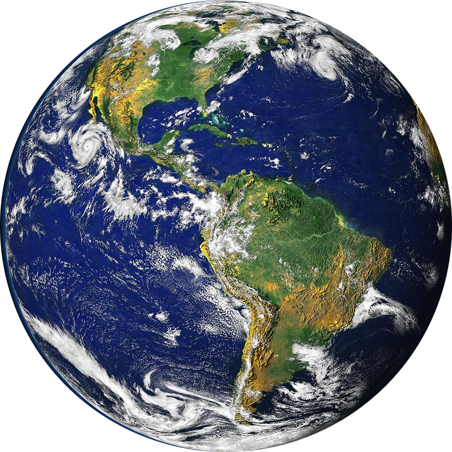

A Terra é conhecida como o planeta azul ou planeta água devido a cerca de 70% de sua superfície ser coberta por água.
A presença de água líquida, oxigênio e a capacidade de reciclar gás carbônico são características únicas da Terra.
Estima-se que a Terra tenha se formado há cerca de 4,56 bilhões de anos.
A teoria da nebulosa solar, proposta por Descartes, Kant e Laplace, é a mais aceita para explicar a origem do Sistema Solar,
incluindo a formação da Terra.
A Terra está em constante transformação em diferentes aspectos: biológico, atmosférico, geológico e físico.
A visão de que a Terra é "viva" não se limita apenas ao aspecto biológico, mas também engloba as mudanças e interações
contínuas nos sistemas atmosférico, geológico e físico do planeta.
